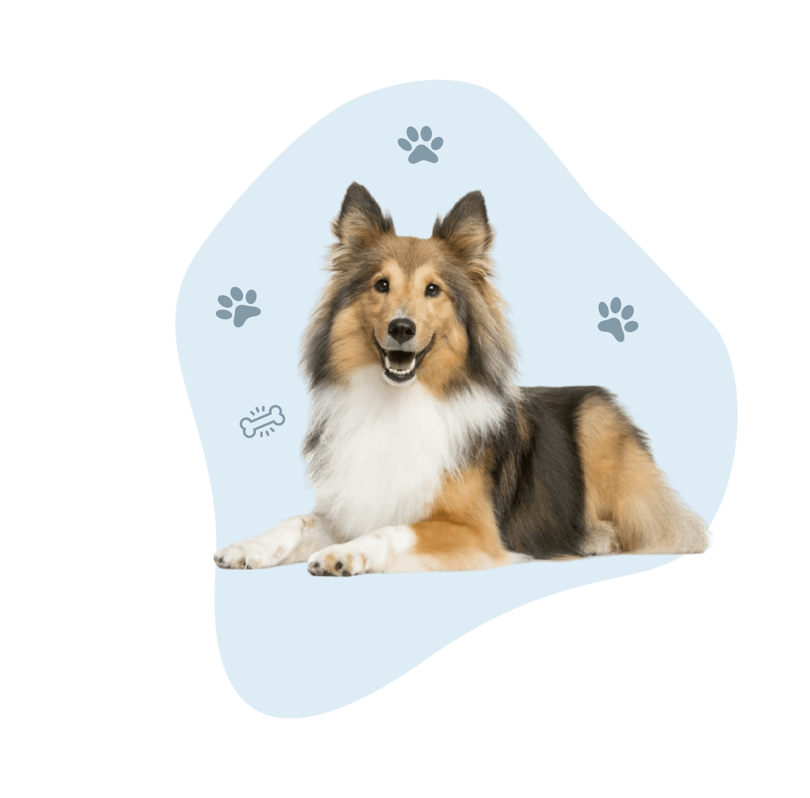
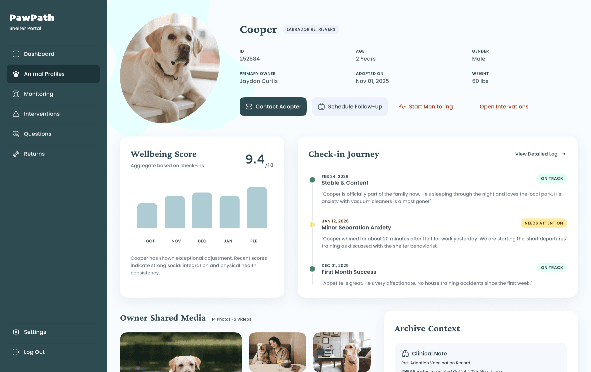
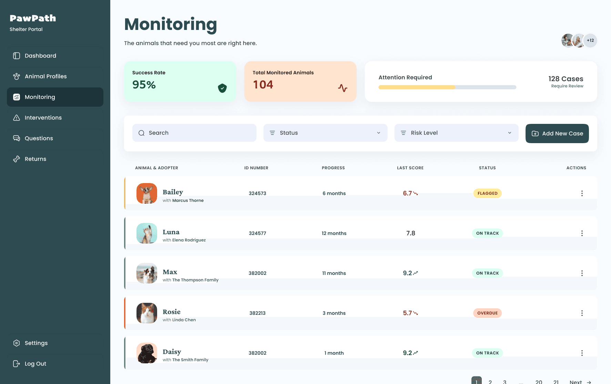
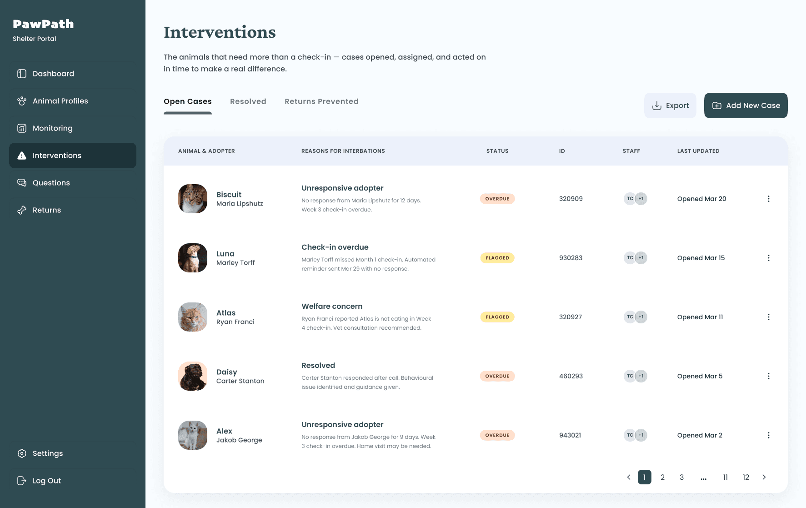
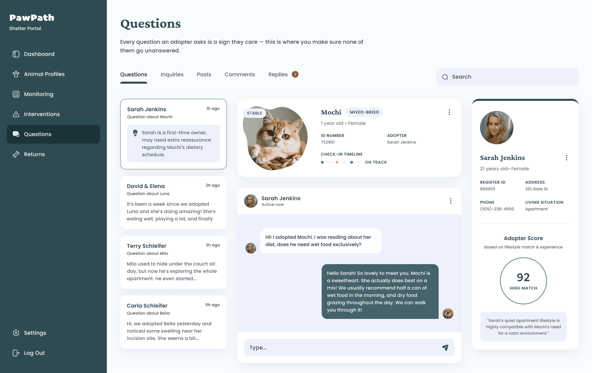
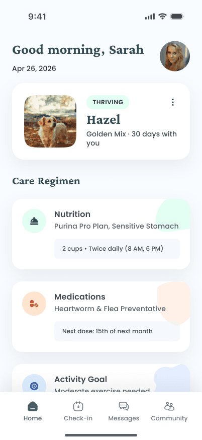
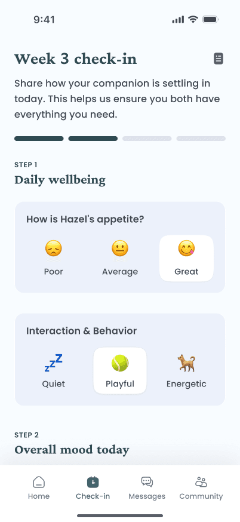
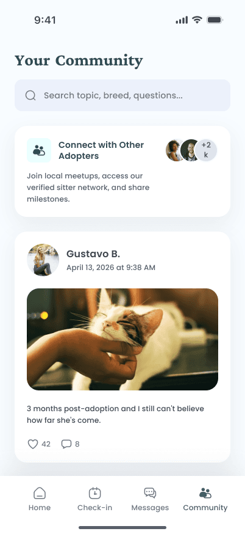
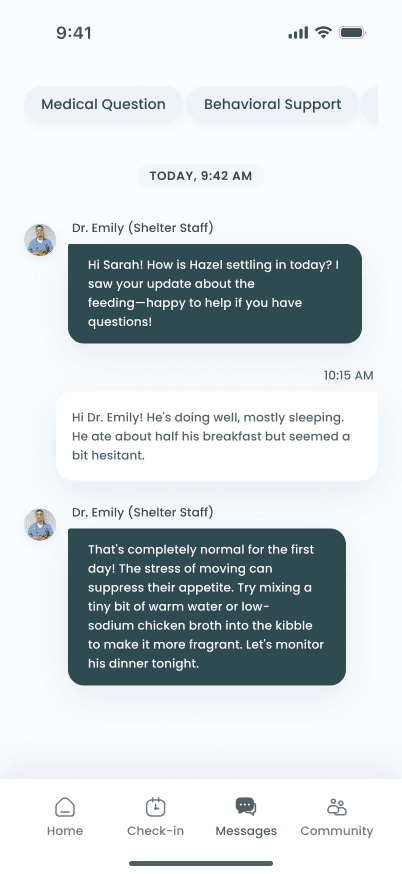
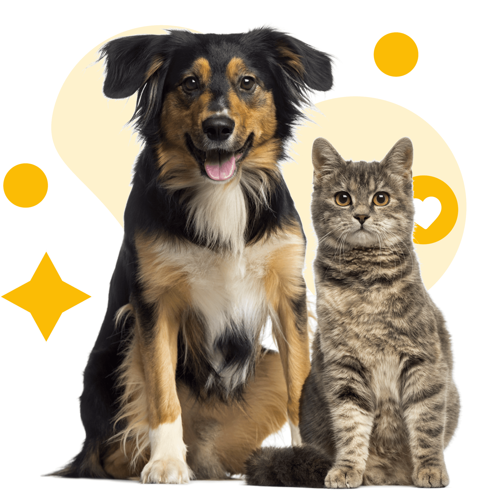

A
Team Member
Product & strategy
An animal's life doesn't end at adoption.
It begins there.

Learn more
For many shelters, adoption is where visibility ends.
Once an animal leaves, there's no way to know:
Are they safe?
Are they adjusting?
Are they being cared for properly?
And for new owners, the journey can feel uncertain—questions, doubts, and advice that isn't always right.
A connected system that helps shelters and adopters stay engaged after adoption—through weekly check-ins, community support, and continuous monitoring—ensuring every pet is cared for beyond the moment they go home.



Not every situation resolves on its own. When check-ins are missed or risks are detected, cases are surfaced, assigned, and followed through—ensuring timely intervention when a pet may need more than passive monitoring.
Every question reflects an owner trying to do better. The system ensures no concern goes unanswered—and flags potentially harmful advice—so that support remains accurate, safe, and grounded in real care.

After adoption, every owner joins the journey through a dedicated app—sharing weekly updates with photos and small moments, connecting with other pet owners, and asking questions along the way. Behind it, shelters stay gently connected, helping ensure each pet continues to grow in a safe and caring home.





They deserve to be seen, cared for, and supported—every week, long after adoption.
Four collaborators shaping a calmer path for shelters, adopters, and pets after adoption day.
Product & strategy
Research & shelter care
Design & experience
Engineering & systems